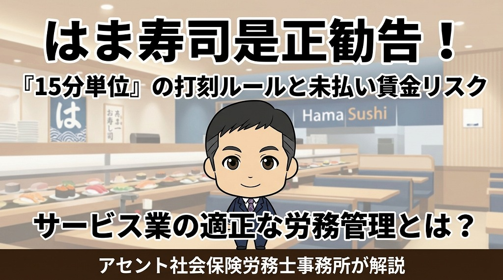

はま寿司の是正勧告から学ぶ労働時間管理の重要性

回転寿司チェーン「はま寿司」に対し、労働基準監督署から是正勧告（法令違反に対する改善指示）が出されました。今回の是正理由は、出勤時の打刻を15分単位で管理し、数分の遅刻に対して労働時間を切り捨てていたことです。アセント社労士事務所が、サービス業における適切な労務管理と、未払い賃金が発生するリスクについて詳しく解説します。
1. はま寿司への是正勧告と「15分単位」の打刻ルール
報道によると、はま寿司では出勤時の打刻時間が15分刻みとなっていました。たとえば午前9時が出勤時間の際、9時1分に打刻しても9時15分からの労働として扱われていました。この運用により、本来支払われるべき14分間分の給与が未払いとなっていたのです。
労働基準法において、労働時間は「1分単位」で計算することが原則です。今回の是正勧告は、労働時間の端数切り捨てが違法であることを改めて示す事例となりました。退勤時間は1分単位で管理されていても、出勤時にこうした切り捨てが行われているケースは少なくありません。しかし、出勤時であっても1分単位の管理が義務付けられている点に留意が必要です。
2. 多くの企業に潜む「始業前の打刻」に関するリスク
始業時間が9時の場合、多くの従業員は8時45分や8時50分など、数分前に出勤して打刻を行います。多くの企業では、この始業前の数分間を労働時間に含めず、一律に9時から労働を開始したとみなして運用していることも多いのではないでしょうか。
今回のニュースで指摘されたのは「遅刻した場合の労働時間カット」ですが、遅刻でない場合の出勤時刻の管理方法も確認が必要です。
物理的な制約として、全従業員が始業時間に同時に打刻することは不可能です。そのため、数分前に打刻が行われること自体は避けられません。しかし、実態として業務に従事している時間があるならば、その開始時点から給与を発生させる必要があります。
3. 労働時間として認められる「準備行為」の範囲
かつての慣習では、制服への着替えや店舗の清掃、朝礼前の準備などは「労働時間外」とされることが一般的でした。しかし、現在の労務管理においては、これらはすべて「労働時間」として扱う必要があります。
適切な管理方法としては、以下の運用が推奨されます。
- タイムレコーダーを会社の入り口近くに設置し、出勤後すぐに打刻する
- 打刻後の着替えや清掃、準備作業をすべて勤務時間としてカウントする
- 始業前に業務を行わない場合は、その旨を明確に指示し始業時刻になるまで休憩することを徹底させる
クリーンな労務管理を実現するためには、従業員も「会社に来てから業務に備えるすべての時間」を労働時間として捉え直す必要があります。
4. 過去に遡った未払い賃金の支払いによる経営への打撃
是正勧告を受けた場合、企業は過去に遡って未払い賃金を算出し、支払う義務が生じます。現在は法改正により、賃金請求権の消滅時効が3年（当分の間）となっているため、最大3年分の遡及支払が必要です。
はま寿司のような全国に650店舗以上、数万人の従業員を抱える企業の場合、一人あたりの金額は少額でも、総額では莫大な金額になります。これらは「特別損失」として計上されることになり、経営に深刻な影響を及ぼしかねます。
労務管理の不備による特別損失は、予測可能なリスクを放置した結果であり、経営上もっとも避けるべき事態です。また、給与の再計算作業にかかる事務負担は甚大なものがあります。
- 出勤時間が一律でない飲食店なので、遅刻かどうかが分かりにくい。
- 当時の時給で計算しなければならない。
- 残業時間の変更が生じる可能性がある。
- 退職者への連絡・振込口座の確認作業。
- 場合によっては社会保険の標準報酬月額の変更が生じるなど、目に見えないコストも膨大になります。
5. 企業イメージと風評被害への対策
金銭的な損失以上に深刻なのが、企業ブランドへのダメージです。労務管理の問題がニュースとして報じられると「ブラック企業」というレッテルを貼られかねません。特にサービス業においては、求人への応募減少や顧客離れを招く恐れがあります。
人手不足が深刻化する中で、労務コンプライアンス（法令遵守）の徹底は採用競争力を高める重要な要素です。適切な時間管理を行うことは、従業員のモチベーション維持だけでなく、企業を守るための防衛策でもあります。
まとめ
今回の事例から学ぶべきポイントは以下の通りです。
-
労働時間は1分単位での計算が鉄則： 15分や30分単位での切り捨て運用は、法的に認められません。
-
準備時間や掃除も労働時間に含まれる： 着替えや開店準備など、業務に不可欠な時間はすべて給与支払いの対象です。
-
遡及支払のリスクを認識する： 最大3年分の未払い賃金は、経営を圧迫する大きなリスクとなります。
-
打刻環境の整備とルールの明確化： 出勤後すぐに打刻し、実態に即した時間管理を行う体制を整えましょう。
※ 最新の法改正動向や社会保険適用ルールと合わせて、自社の就業規則や勤怠管理システムを見直すことが急務です。
アセント社労士事務所では、大阪のサービス業を中心に、適切な労務管理の導入をサポートしています。現状の打刻運用に不安がある場合は、早急な見直しをお勧めします。
従業員数の管理や社会保険のお悩みを解決します
アセント社労士事務所は、大阪のサービス業を中心に働き方改革をサポートしています。
複雑な労務管理や社会保険の手続きに関するご相談は、当事務所までお気軽にお問い合わせください。